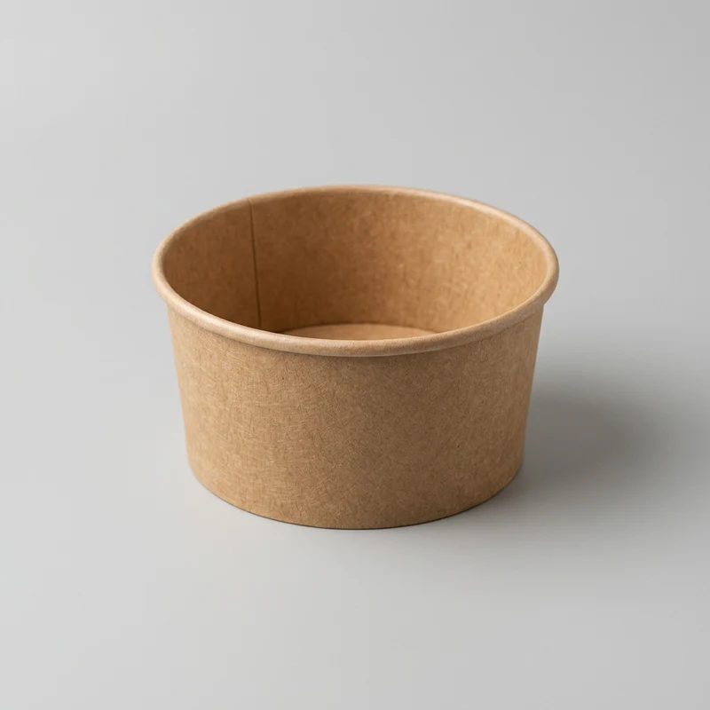
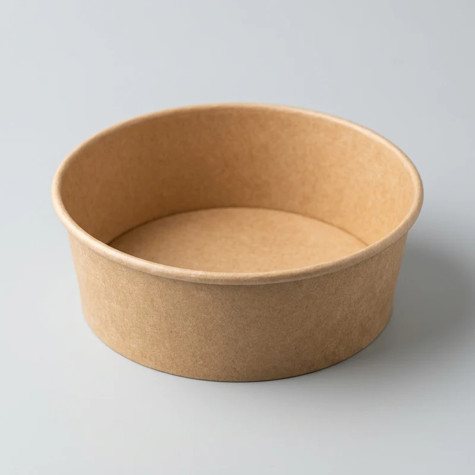
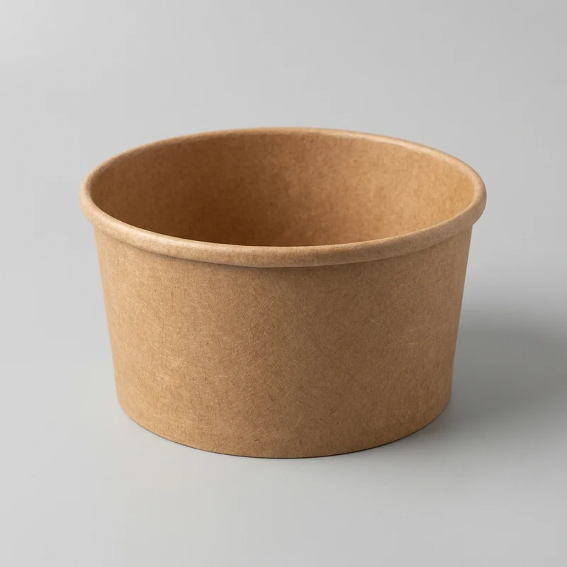

Toptan Kraft Salata Kasesi ve Kraft Salata Kabı İmalatı
%100 geri dönüştürülebilir gıda sertifikalı selüloz liflerinden üretilen doğal kraft salata kaseleri. Sos, yağ ve sıvı geçirmez özel PE iç kaplaması ile paket serviste sıfır dökülme garantisi. 550cc, 750cc, 1000cc, 32oz ve 38oz seçenekleriyle fabrikadan doğrudan toptan satış.
Toptan Kraft Salata Kasesi Modellerimiz

550 CC Kraft Salata Kabı
Küçük boy meze, diyet salata ve aperatif paket servisleri için sızdırmaz 150 mm ağız çaplı kraft kase.

750 CC Kraft Salata Kabı
Restoran zincirleri ve paket servis noktalarının en çok sattığı standart boy sızdırmaz kraft salata kasesi.

32 OZ Kraft Salata & Bowl Kase
Poké bowl, sıcak yemek ve büyük boy zengin salata sunumları için 185 mm geniş ağız çaplı kraft kap.

38 OZ Kraft Salata Kabı (Maksimum Hacim)
Toplu catering, makarna ve ekstra büyük boy salata menüleri için yüksek gramajlı dev boy kraft kase.
Kraft Salata Kasesi Ölçü ve Koli Detayları
| Ürün Modeli | Hacim | Ağız Çapı | Yükseklik | Koli İçi Adet | Sızdırmazlık Kapak |
|---|---|---|---|---|---|
| 550 CC Kraft Kase | 550 CC | 150 mm | 45 mm | 300 Adet | 150 mm PET Kapak Uyumlu |
| 750 CC Kraft Kase | 750 CC | 150 mm | 60 mm | 300 Adet | 150 mm PET Kapak Uyumlu |
| 32 OZ Kraft Bowl Kase | 32 OZ (1000 CC) | 185 mm | 53 mm | 300 Adet | 185 mm PET Kapak Uyumlu |
| 38 OZ Kraft Bowl Kase | 38 OZ (1200 CC) | 185 mm | 60 mm | 300 Adet | 185 mm PET Kapak Uyumlu |
Neden Kraft Salata Kasesi ve Salata Kabı Tercih Edilmelidir?
Günümüz restoran ve paket servis ekosisteminde plastik ambalajların yerini doğal kraft salata kasesi ve ekolojik gıda kapları almıştır. Kraften Ambalaj olarak ürettiğimiz kraft salata kabı serileri, hem markanızın çevre dostu imajını güçlendirir hem de müşterilerinize premium bir paket servis deneyimi sunar.
Kraften Kraft Salata Kaselerinin Üstün Avantajları:
%100 Sızdırmaz İç Bariyer
Zeytinyağı, limon, sirke ve nar ekşili salatalarda tabandan leke yapmaz ve kağıdın yumuşamasını engeller.
Gıda Sertifikalı Selüloz
FSC sertifikalı ve ISO 22000 gıda güvenliği onaylı saf ağaç liflerinden imal edilir.
Özel Logo Baskı İmkanı
Markanızın amblemini ve kurumsal renklerini taşıyan baskılı kraft salata kabı üretimi sunuyoruz.
Fabrikadan Doğrudan Toptan Fiyat Alın
Restoranınız veya bayiliğiniz için en avantajlı kraft salata kasesi fiyatları ve ücretsiz numune talebi için hemen iletişime geçin.
WhatsApp Toptan Destek HattıSıkça Sorulan Sorular (SSS)
Kraft salata kaseleri sıvı ve yağlı salatalarda sızdırma yapar mı?
Kesinlikle hayır. Kraften Ambalaj kraft kaseleri iç yüzeyinde gıdaya uygun polietilen (PE) koruyucu bariyer içerir. Nar ekşisi, zeytinyağı ve soslar kağıda nüfuz edemez.
Minimum toptan alım koli miktarı nedir?
Kraft kase modellerimiz koli bazında satılmaktadır. Standart koli ambalajı 300 adettir. 1 koli ve üzeri siparişlerde aynı gün kargo gönderimi yapılmaktadır.
Kraft kaselere özel logo baskısı yapılıyor mu?
Evet, Kraften Ambalaj fabrikasında işletmenize özel logo ve kurumsal grafik tasarımlı baskılı kraft salata kaseleri üretmekteyiz.
550 cc ve 750 cc kaselere aynı kapak uyar mı?
Evet, hem 550 cc hem de 750 cc kraft kaselerimiz 150 mm ağız çapına sahiptir. Tek tip 150 mm PET sızdırmaz kapak iki modele de mükemmel uyum sağlar.